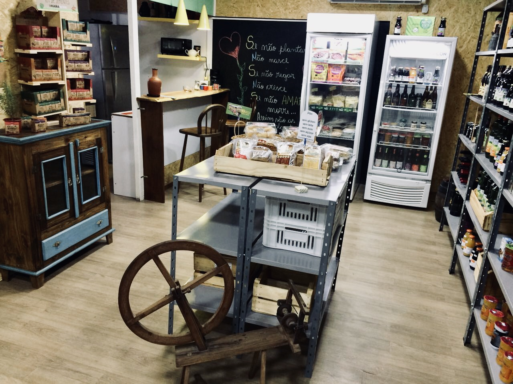

Quem é o Quintal Urbano?
O Quintal Urbano surgiu através das vivencias e desejos de dois biólogos, apaixonados pela vida, e amantes da natureza, que resolveram estender suas salas de aulas para além do currículo tradicional.
Nossas viagens, nossos estudos, nossas vivencias do dia a dia, foram traçando nossos caminhos, até a ideia de manter a biologia de maneira permanente em nossas vidas.
Para isto, começamos a visitar feiras agroecológicas, conhecer as histórias de vida de agricultores familiares ,
o que nos fez entender a importância deles, para que o alimento chegue a nossa mesa e, principalmente a importância ambiental que desempenham na cadeia produtiva.
Hoje, acreditamos em ações educativas, orientadas para conservação ambiental, através do comércio de produtos naturais, orgânicos e veganos.
Pois o uso de produtos que são naturais, sem incremento de insumos artificiais e ou, pesticidas mantém o ambiente saudável e em equilíbrio, assim como, a saúde do agricultor e de quem os consome.
Deste modo, o Quintal Urbano passa a ser um novo espaço para integrar pessoas, que tem o mesmo objetivo que o nosso, de conservar o ambiente, manter a saúde, e compartilhar estas relações e informações com outras pessoas.
Portanto, não focamos somente em vendas, e sim, criamos mais um espaço de compartilhamento de vivencias, de trocas de saberes, onde você possa se sentir bem, e que esse compartilhar do dia a dia, contribua para melhoraria da nossa Terra Mãe.
Missão
A nossa missão é fornecer produtos de alta qualidade e com preço justo, que respeitem a vida durante sua produção, para pessoas antenadas com a sua saúde e com práticas sustentáveis.
Visão
Temos como base 4 pilares de sustentabilidade, com produtos e práticas:
- Ecologicamente corretos
- Economicamente viáveis
- Socialmente justos
- Culturalmente diversos
